Dashboard de Vendas
Introdução
Um dashboard é um painel visual que apresenta, de maneira centralizada, um conjunto informações, com indicadores e métricas, e com isso pode servir de auxílio na tomada de decisões e apresentar o status da empresa em uma única tela para o gestor.
Portanto, o módulo de Dashboard de Vendas faz uma representação visual de dados da operação comercial em tempo real das vendas da loja, possibilitando o seu acompanhamento e a quantidade de GCs, o ticket médio e os produtos vendidos.
Qual utilidade deste módulo?
O módulo Dashboard de Vendas é um painel de controle que centraliza, organiza e apresenta os dados comerciais de vendas da franquia, com os GCs e ticket médio. É uma ferramenta visual que fornece um panorama sobre o progresso da empresa em relação ao seu cumprimento de metas e objetivos. O painel é atualizado em tempo real para que gestores tenham acesso às principais informações sobre o processo comercial, em poucos segundos.
Acesso ao Módulo
Ao entrar no módulo, mostrará por padrão um dashboard vazio, para que os dados apareçam é necessário filtrar pelas opções no cabeçalho, como mostra na imagem abaixo.
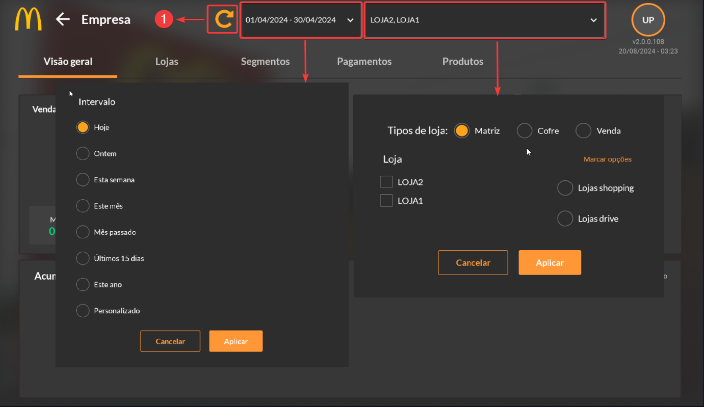Na opção de filtro por loja é possível selecionar uma ou mais lojas de acordo com os tipos (Matriz, Cofre ou Venda), inclusive todas as filiais, caso necessário. Ainda, é possível selecionar automaticamente um conjunto de lojas ao marcar a opção “Lojas Shopping” ou “Lojas Drive”. Além disso, é possível determinar um intervalo pelo filtro de tempo, tendo as demais opções apresentadas na imagem acima. Para que as configurações sejam salvas e aplicadas ao dashboard, selecione a seta laranja (1). Para demonstração de uso da sua funcionalidade foram selecionadas as lojas do drive-thru no período de Abril.
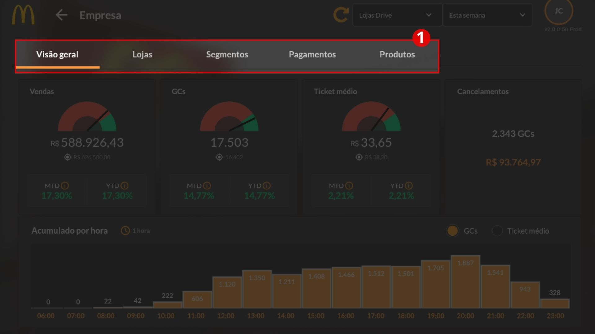O módulo conta com cinco modos de visualização das informações (1): visão geral, que traz de forma resumida todos os pontos importantes para o gestor; por lojas, que separa os dados pelas lojas e seus tipos (drive-thru ou shopping); por segmento (balcão, NGK, delivery etc.); por tipo de pagamento e, por último, por produtos (bebidas frias, lanches, sobremesas etc.).
Visão Geral
Na aba de visão geral é possível ver o total de vendas realizadas durante o período (1), o total de Guest Counts (2), o Ticket médio (3), os cancelamentos realizados (4) e o acumulado por hora (tendo a opção de visualizar por GCs ou por ticket médio) (5).
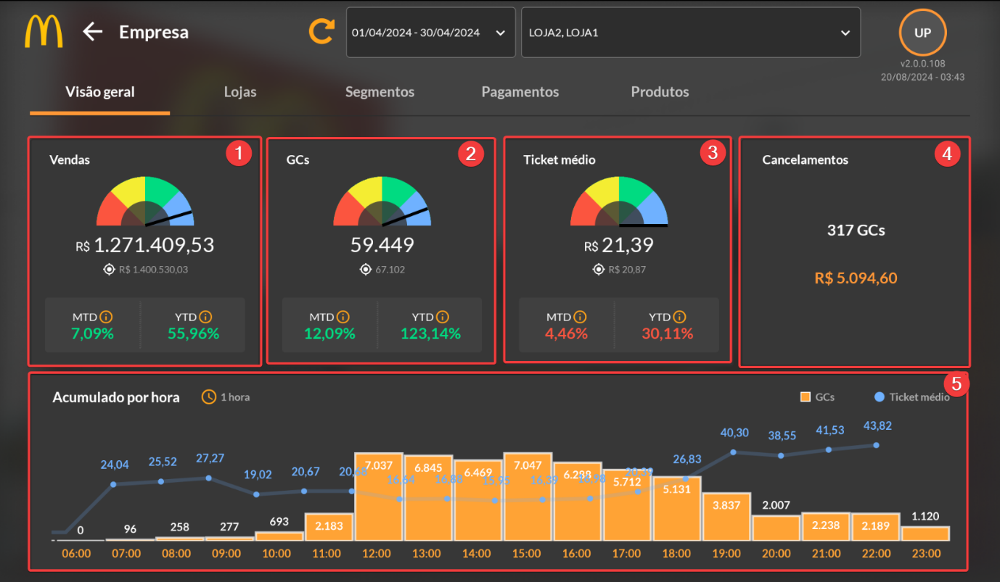Campo de Vendas, GCs e Ticket Médio
Os campos de Vendas, GCs e Ticket Médio do dashboard possuem a mesma exibição gráfica, contendo os componentes de indicador de status (1), total acumulado (2), meta estabelecida (3), MTD (month to date) (4) e YTD (year to date) (5), como mostra a imagem abaixo.
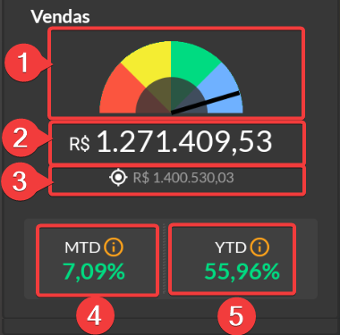O indicador de status (1) é um componente gráfico que permite saber se o total acumulado (2) se encontra abaixo da meta estabelecida (3) através do ponteiro na zona vermelha, ou acima da meta, indicado pelo ponteiro situado na zona azul. Na imagem acima, por exemplo, o ponteiro está indicando que os resultados estão quase do esperado pela meta estabelecida.
Já o indicador MTD (4) é uma métrica utilizada para comparar o período do primeiro dia do mês corrente até a data de visualização do dashboard com o mesmo período no ano passado, ou seja, se o usuário estiver visualizando o dashboard em 01 de abril de 2024, este resultado será comparado com o resultado do mesmo período do ano anterior: dia primeiro até o 01 de abril de 2023. Na imagem acima, por exemplo, o MTD está marcado em verde, indicando que houve um acréscimo de 7,09% em relação ao resultado atingido no ano passado.
Por último temos o indicador YTD (5) no qual faz uma comparação do início do ano corrente até a data de visualização do dashboard e compara com o mesmo período no ano passado. Ou seja, se o usuário estiver visualizando o dashboard em 01 de abril de 2024, irá pegar o total acumulado do dia primeiro de janeiro do ano corrente até a data de visualização e irá comparar com o resultado do dia primeiro de janeiro até 01 de abril do ano passado. Na imagem acima, por exemplo, o YTD está marcado em verde, indicando que houve um acréscimo de 55,96% em relação ao resultado atingido no período do ano passado.
Perceba que sua diferença com o MTD é referente ao tempo de comparação, o YTD irá começar desde primeiro de janeiro até a data presente do dashboard, enquanto o MTD se limitará apenas ao mês corrente da visualização.
Cancelamentos
No campo de “Cancelamentos” é exibido o total de GCs e o total em reais de todos os cancelamentos efetuados, ao clicar sobre este campo, abrirá uma tela contendo os detalhes da loja, nota fiscal, caixa, chave de acesso, data, hora e valor. A faixa ao lado de cada linha significa se a nota foi cancelada por substituição ou apenas cancelada, como mostra a imagem abaixo.
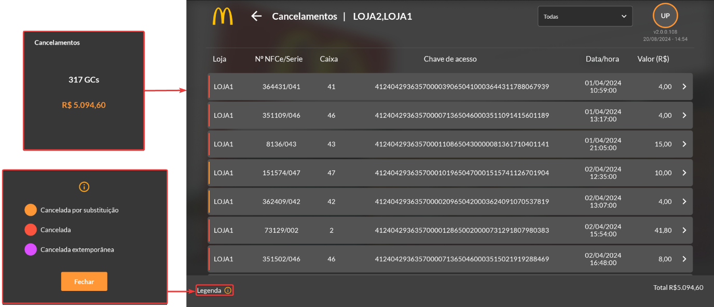Ao selecionar um dos cancelamentos, podemos ver os detalhes do pedido, com a descrição de cada item, quantidade, preço unitário e total.
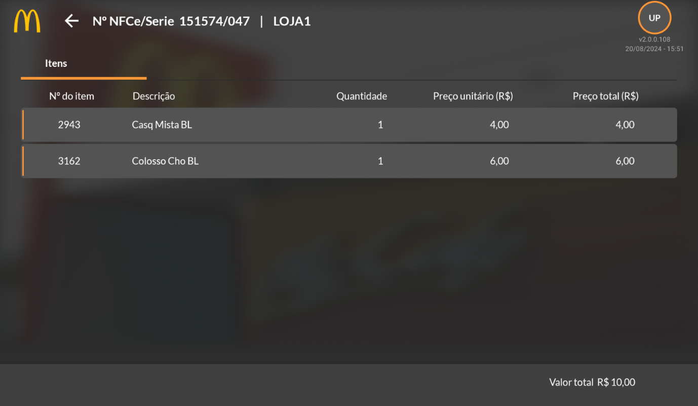Acumulado por 15min, 30min e 60min
Este campo mostra em um gráfico de barras a quantidade de cupons emitidos (GCs) e o ticket médio em um gráfico de linhas a cada hora, desde a abertura até o fechamento da loja, de acordo com o filtro utilizado.
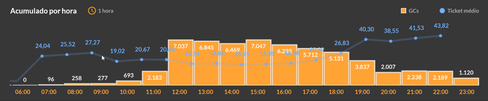Vendas
Loja
Após ter selecionado na página principal as lojas que deseja visualizar no dashboard durante um determinado período, é possível visualizar as informações separadas por LOJA ou TIPO DE LOJA pela aba “Lojas”, nela são apresentadas as informações do total de vendas ou GCs através de um gráfico de rosca. A imagem abaixo evidencia os demais usos e filtros.
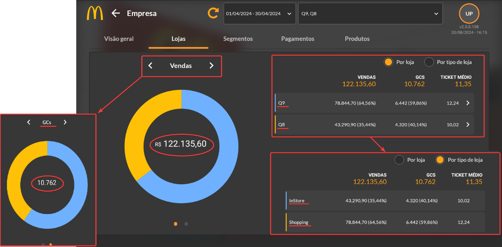Cada cor é referente a uma LOJA ou TIPO DE LOJA, e é possível selecionar uma das cores para exibir os detalhes (como o total de vendas/GC da loja e seu percentual), além disso, se selecionar a seta da loja é possível abrir um resumo geral separado pelos caixas e segmentos, abaixo é possível visualizar uma prévia do uso.
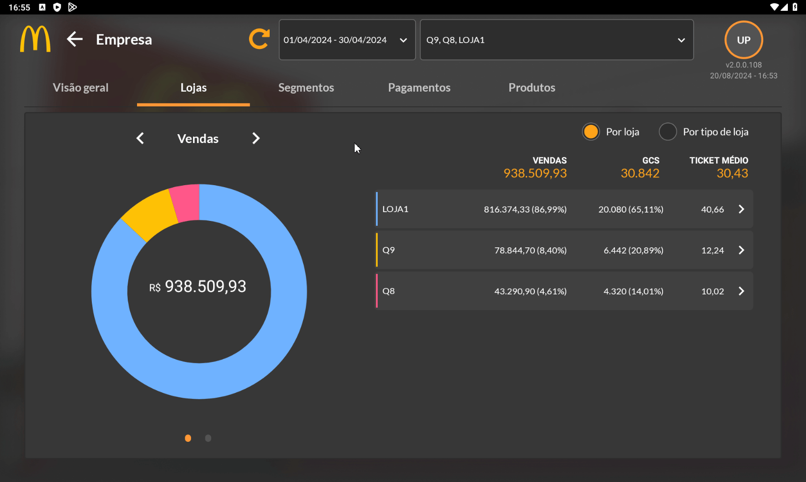Cada bloco representa um caixa (com seu respectivo número de caixa), o símbolo de cifrão representa a valor de vendas, o símbolo do boneco representa a quantia de GCs e o símbolo de dinheiro representa o ticket médio. Dentro de cada bloco temos o total de itens pedidos separados por produtos. No rodapé temos o total de vendas, o total de GCs e o ticket médio da loja.
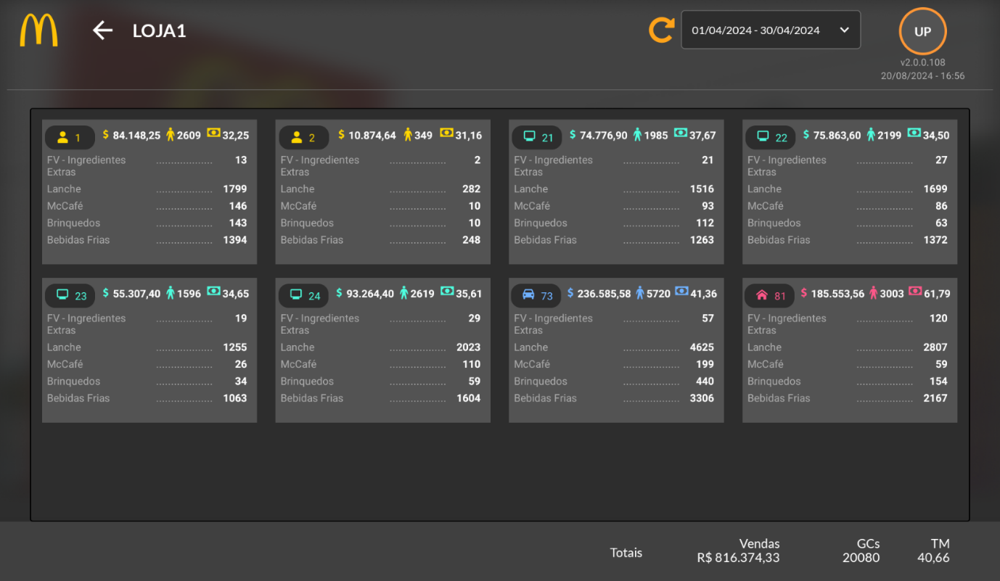Segmentos
A aba “Segmentos” apresenta as informações de acordo com o TIPO DE SEGMENTO (caixas), nela são apresentadas as informações do total de vendas ou GCs através de um gráfico de rosca. Seu funcionamento é semelhante ao da aba anterior e pode ser conferido abaixo através do vídeo curto.
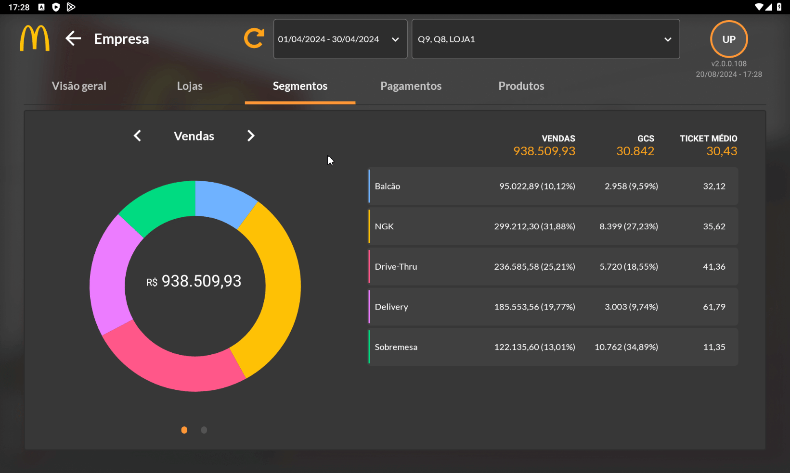Pagamentos
A aba de pagamentos segue a mesma lógica e funcionalidade das demais, porém separada por tipo de pagamento, como mostra a imagem abaixo.
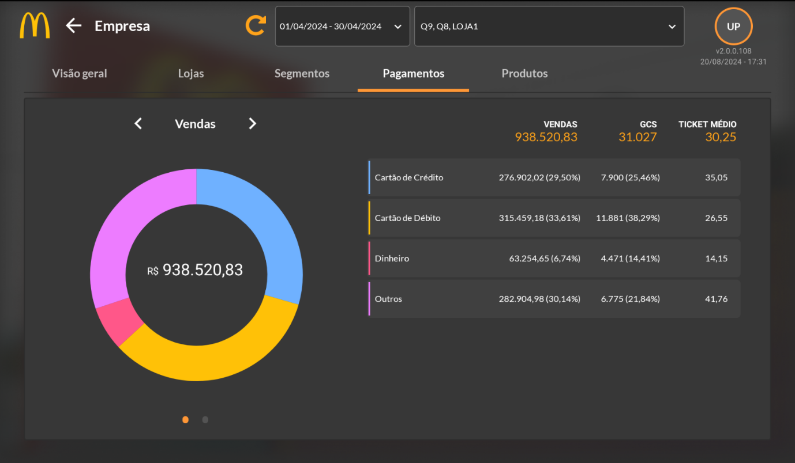Produtos
A última aba do módulo é a aba de “Produtos”, na qual apresenta o total de vendas realizadas separadas pelos produtos da loja, ela é diferente das demais representações, pois não apresenta a quantidade do valor do ticket médio, em seu lugar são exibidos a quantidade total do item e o cálculo de MGC, além disso é possível ver todos os itens pedidos dentro daquele tipo de produto ao clicar sobre ele.
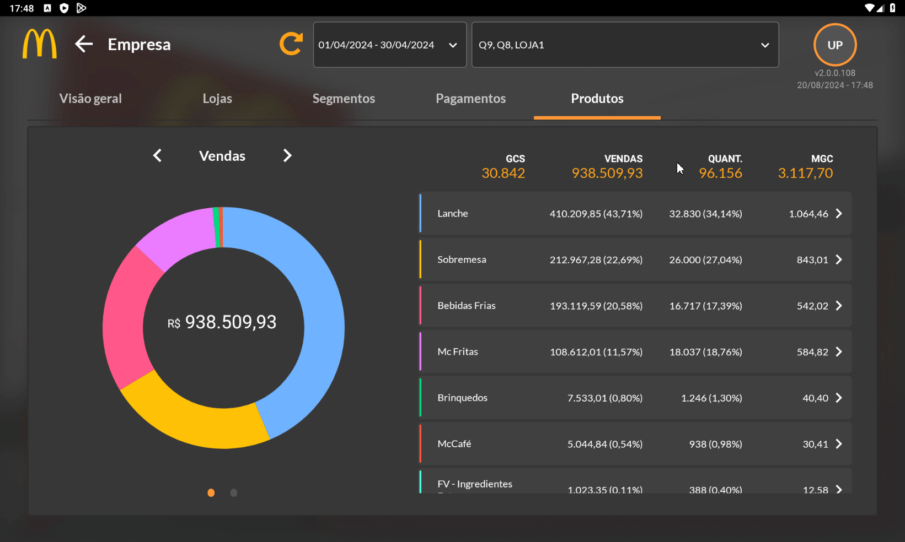